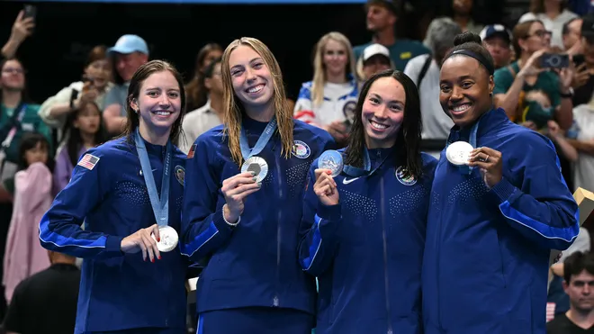

This year, the USA won the most amount of silver medals won in the Olympics. For the magority of races in this bracket, women again
took the lead, having a total of nine silver medals compared to the men's four. Despite the deficit, both men and women were able to put up valient races, and take
home much of this years medals in swimming. As a result, the USA actually placed first in the Olympics this year, with a wopping 126 medals! Compared to the second
place winner; France, who had one only 91 medals, it's safe to assume that team USA, along with everyone that participated in both the swimming events or otherwise
pulled there weight and brought the United States to the top! The results for the silver medals won in swimming events for this years Olympics can be found in the
tables below.

Women's 4 x 100m Freestyle Relay Final
| Team |
Time |
| AUS |
3:28.92 |
| USA |
3:30.20 |
| CHN |
3:30.20 |
Women's 100m Butterfly Final
| Athlete |
Time |
| Torri Huske |
55.59 |
| Gretchen Walsh |
55.63 |
| Yufei Zhang |
56.21 |
Men's 100m Breaststroke Final
| Athlete |
Time |
| Nicolo Martinenghi |
59:03 |
| Nic Finc |
59:05 |
| Adam Peaty |
59:05 |
Women's 400m Individual Medley Final
| Athlete |
Time |
| Summer McIntosh |
4:27.71 |
| Katie Grimes |
4:33.40 |
| Emma Weyant |
4:34.93 |
Women's 100m Backstroke Final
| Athlete |
Time |
| Kaylee McKeown |
57:33 |
| Regan Smith |
57:66 |
| Katharine Berkoff |
57.98 |
Men's 800m Freestyle Final
| Athlete |
Time |
| Daniel Wiffen |
7:38.19 |
| Bobby Finke |
7:38.75 |
| Gregorio Paltrinieri |
7:39.38 |
Men's 4 x 200m Freestyle Relay Final
| Team |
Time |
| GBR |
6:59.43 |
| USA |
7:00.78 |
| AUS |
7:01.98 |
Women's 100m Freestyle Final
| Athlete |
Time |
| Sarah Sjoestroem |
52:16 |
| Torri Huske |
52:29 |
| Siobhan Bernadette Haughey |
52:33 |
Women's 200m Butterfly Final
| Athlete |
Time |
| Summer McIntosh |
2:03.03 |
| Regan Smith |
2:03.84 |
| Yufei Zhang |
2:05.09 |
Women's 4 x 200m Freestyle Relay Final
| Team |
Time |
| AUS |
7:38.8 |
| USA |
7:40.86 |
| CHN |
7:42.34 |
Women's 200m Backstroke Final
| Athlete |
Time |
| Kaylee McIntosh |
2:03.73 |
| Regan Smith |
2:04.26 |
| Kylie Masse |
2:05.57 |
Women's 200m Individual Medley Final
| Athlete |
Time |
| Summer McIntosh |
2:06.56 |
| Kate Douglass |
2:06.92 |
| Kaylee McKeown |
2:08.08 |
Men's 4 x 100m Medley Relay Final
| Team |
Time |
| CHN |
3:27.46 |
| USA |
3:28.01 |
| FRA |
3:28.38 |